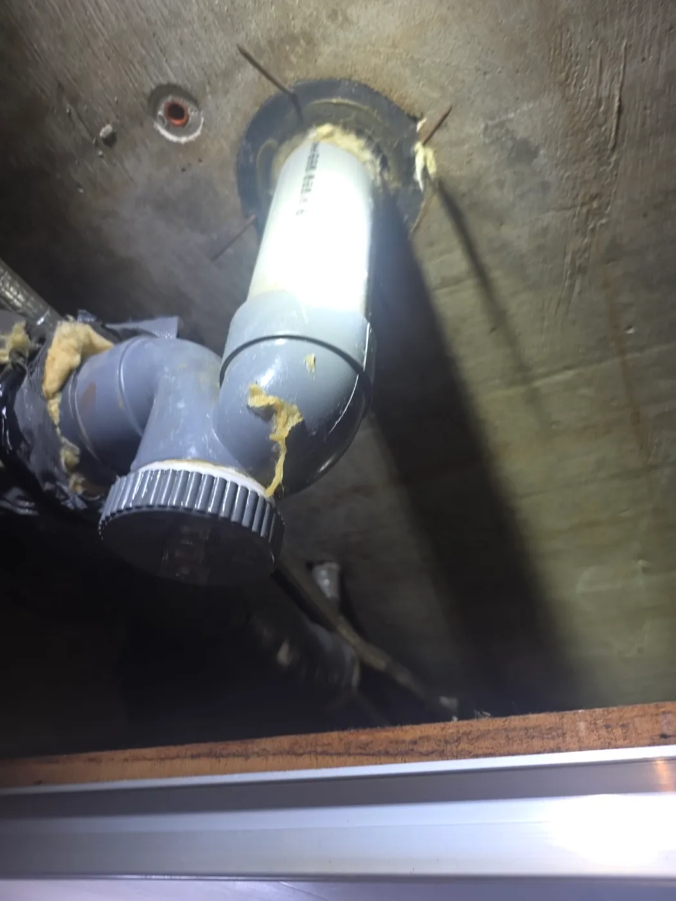

서울 서초구 반포동 배관공사, 현장 도착 후 진단
서울 서초구 반포동의 30년 넘은 아파트에서 하수배관 막힘과 아랫집 누수가 함께 발생했습니다. 아래층 천장 안쪽을 확인하니 기존 트랩 뚜껑 부위에서 물이 새고 있었습니다.
이런 트랩은 하부 뚜껑을 열어 막힌 곳에 접근할 수 있고, 물을 가두는 구조로 하수 냄새를 차단하는 역할도 합니다. 하지만 오랜 사용 중 하부에 이물질이 쌓이면 배수 통로가 좁아지고, 결국 물까지 고이게 됩니다.
이번 현장에서 중요하게 본 것은 사용 기간과 쌓인 이물질의 무게, 그리고 연결부 상태였습니다. 축적물과 고인 물의 하중이 지속적으로 걸리는 가운데 배관은 온도 변화에 따라 수축과 팽창을 반복합니다. 여기에 작은 이물질이 접합 틈에 끼면서 밀착을 방해하면, 노후한 뚜껑 연결부는 변형과 누수에 더욱 취약해집니다.
현장에서는 이미 트랩 연결부의 변형과 누수가 확인됐습니다. 이물질을 제거해 물길을 확보하는 것만으로는 변형된 연결부가 복구되지 않기 때문에, 해당 구간의 배관 교체가 필요한 상태였습니다.
1단계: 증상 확인과 필요한 장비 작업
먼저 고객님께 막힘 제거와 배관 교체가 각각 왜 필요한지 설명드렸습니다.
“안에 쌓인 것을 꺼내면 물은 내려갈 수 있습니다. 하지만 이미 틀어진 뚜껑 연결부까지 원래대로 돌아오는 것은 아닙니다. 이번에는 물길을 뚫는 작업과 함께, 물이 새는 트랩 구간을 교체해야 합니다.”
배관공사를 자주 접하지 않는 고객님 입장에서는 ‘뚫으면 끝나는 것 아닌가’ 하고 생각하실 수 있습니다. 그래서 기존 트랩 상태와 교체할 구간을 짚어가며, 이번 공사는 배관 전체가 아닌 문제가 발생한 연결 구간을 대상으로 한다는 점까지 안내했습니다. 고객님이 공사의 필요성과 범위를 이해하실 수 있도록 눈높이를 맞추는 과정이었습니다.
작업 순서와 협조가 필요한 내용도 미리 설명드렸습니다. 아래층에서 배관을 열고 작업하는 동안 윗집에서 물을 사용하면 열린 배관으로 그대로 쏟아질 수 있습니다. 따라서 관련 배수시설은 사용을 멈추고, 작업자의 안내에 맞춰 사용을 재개하도록 말씀드렸습니다.
이후 아랫집 욕실에 작업 발판을 설치하고 주변을 비닐로 보양했습니다. 배관을 열 때 떨어질 수 있는 오수와 찌꺼기로부터 아래층 공간을 보호한 뒤, 막힌 구간의 이물질을 제거하고 고여 있던 물을 배출했습니다.

2단계: 원인 구간 처리와 정상 작동 확인
내부를 정리한 다음에는 누수가 발생한 기존 트랩 구간을 절단해 철거했습니다. 이어 새 배관과 엘보를 연결해 위에서 내려오는 배관과 옆으로 이어지는 배관을 연결했습니다.
이번 교체는 단순히 배관이 오래됐다는 이유로 진행한 공사가 아닙니다. 실제로 막힘과 누수가 발생했고, 연결부가 변형돼 이물질 제거만으로는 보수를 마칠 수 없었기 때문에 필요한 작업이었습니다.
문제가 있는 구간을 분명히 하고, 그 구간에 필요한 교체를 진행하는 것이 이번 공사의 핵심이었습니다. 고객님께도 막힘 제거만 진행했을 때 남는 문제와 교체로 보수할 부분을 구분해 설명드렸습니다.
다만 트랩을 엘보로 바꾸는 방식을 모든 현장에 적용할 수는 없습니다. 트랩에는 악취 차단 기능도 있으므로, 교체 방식은 해당 배관 구조와 악취 차단 방식에 맞춰 결정해야 합니다.

작업 결과와 재발 방지 안내
트랩 내부의 이물질과 고인 물을 제거하고, 변형과 누수가 발생한 기존 연결 구간을 새 배관과 엘보로 교체했습니다. 배수를 방해하던 축적물과 누수가 발생하던 부위를 함께 처리한 작업입니다.
아랫집에서 누수 연락을 받았다면 윗집에서도 미리 확인할 사항이 있습니다. 최근 배수가 느려지거나 막힌 곳은 없었는지, 어떤 배수시설을 사용했을 때 물이 샜는지, 사용을 멈춘 뒤에도 누수가 이어지는지 아랫집과 상황을 공유해 주세요. 누수가 시작된 시간과 물자국 사진도 점검에 도움이 됩니다.
다만 원인을 찾으려고 물을 반복해서 흘려보내지는 마세요. 우선 관련 배수시설 사용을 줄이고, 관리사무소와 아래층에 알려 배관을 확인할 수 있도록 일정을 협의하는 것이 좋습니다. 천장 속 트랩 뚜껑도 임의로 열지 않는 편이 좋습니다. 내부에 고인 물과 이물질이 한꺼번에 쏟아질 수 있기 때문입니다.
공사를 의뢰할 때는 왜 교체가 필요한지, 실제 교체 범위가 어디까지인지, 보양과 정리 및 천장 마감 복구가 견적에 포함되는지 미리 확인해 주세요. 고객이 작업 내용을 이해해야 비용도 같은 기준으로 비교할 수 있습니다.
신라건축설비는 이번 반포동 현장에서 원인 진단에 그치지 않고, 교체가 필요한 이유와 작업 중 협조 사항까지 쉽게 설명드렸습니다. 필요한 공사를 고객이 납득하고 맡기실 수 있도록 안내하는 것까지 현장 작업의 일부로 생각합니다.
최종 조치: 아랫집 작업 공간을 보양한 뒤 막힌 구간의 이물질을 제거하고 고인 물을 배출했습니다. 이후 변형과 누수가 발생한 기존 트랩 구간을 절단해 철거하고, 새 배관과 엘보로 교체했습니다.
현장 방문 전 확인하는 비용과 작업 범위
신라건축설비는 현장 증상과 배관 구조를 확인한 뒤 필요한 작업과 예상 비용을 안내합니다. 단순 관통으로 해결되는지, 배관내시경·석션·고압세척 또는 추가 장비가 필요한지는 현장 상태에 따라 달라집니다. 출장비와 야간 작업비, 추가 장비 비용이 발생할 수 있는 경우 작업 전에 먼저 설명하고 동의를 받은 범위에서 진행합니다.
업체를 선택할 때 확인할 사항
무조건적인 ‘0원’ 표현보다 실제 작업 범위, 추가 비용 조건, 사용 장비와 사후 대응 기준을 확인하는 것이 중요합니다. 해결되지 않았을 때의 비용 기준과 작업 후 동일 증상 발생 시 점검 범위를 사전에 문의해두면 불필요한 분쟁을 줄일 수 있습니다.
서울 서초구 배관공사 자주 묻는 질문
공사 전에 견적을 받을 수 있나요?
서울 서초구 반포동 현장처럼 아랫집 천장 속 하수배관 트랩에서 물이 계속 새고 있었습니다. 트랩 내부에는 이물질이 쌓여 배수가 막혀 있었고, 빠져나가지 못한 물도 고여 있었습니다. 증상은 원인이 현장마다 다를 수 있습니다. 현장 구조와 필요한 공사 범위를 확인한 뒤 견적을 안내합니다.
추가 공사가 생기면 바로 진행하나요?
추가 범위가 필요한 경우 고객에게 먼저 설명하고 동의 후 진행합니다.
작업 후 A/S는 어떻게 되나요?
작업 범위와 원인에 따라 사후 점검 기준을 안내합니다.
배관공사 서울·경기 출동지역
신라건축설비는 서울 서초구 반포동 현장을 포함해 서울 25개 구와 경기도 31개 시·군의 배관 문제를 상담합니다. 현장 거리와 기사 배정 상황에 따라 출동 가능 여부를 먼저 안내드립니다.
서울 전 지역
강남구 · 강동구 · 강북구 · 강서구 · 관악구 · 광진구 · 구로구 · 금천구 · 노원구 · 도봉구 · 동대문구 · 동작구 · 마포구 · 서대문구 · 서초구 · 성동구 · 성북구 · 송파구 · 양천구 · 영등포구 · 용산구 · 은평구 · 종로구 · 중구 · 중랑구
경기도 주요 출동지역
수원시 · 용인시 · 고양시 · 화성시 · 성남시 · 부천시 · 남양주시 · 안산시 · 평택시 · 안양시 · 시흥시 · 파주시 · 김포시 · 의정부시 · 광주시 · 하남시 · 광명시 · 군포시 · 양주시 · 오산시 · 이천시 · 안성시 · 구리시 · 의왕시 · 포천시 · 양평군 · 여주시 · 동두천시 · 과천시 · 가평군 · 연천군